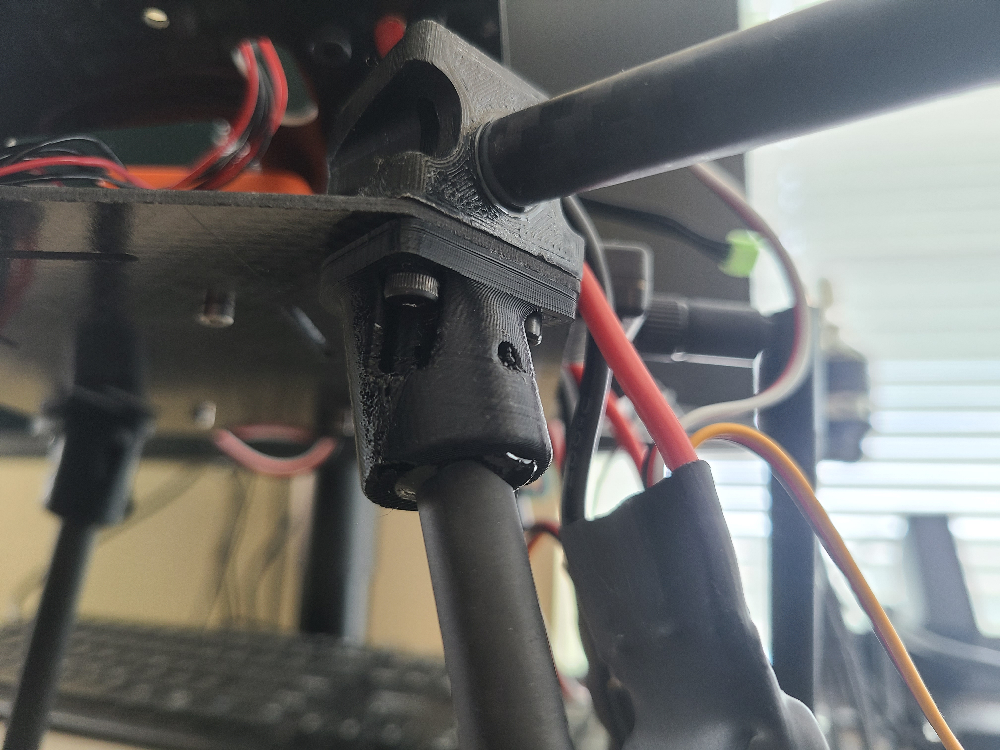
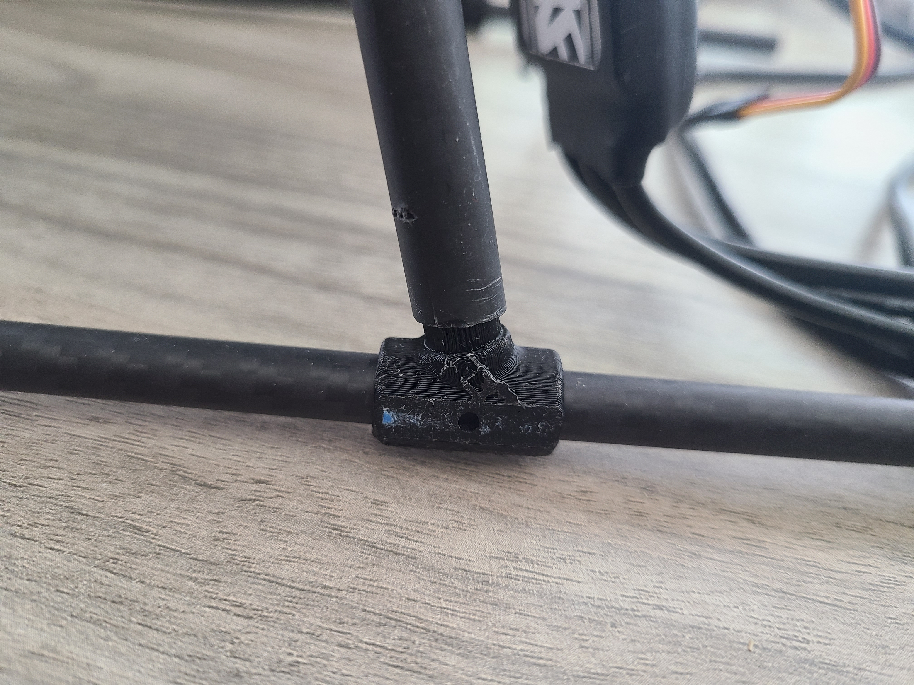
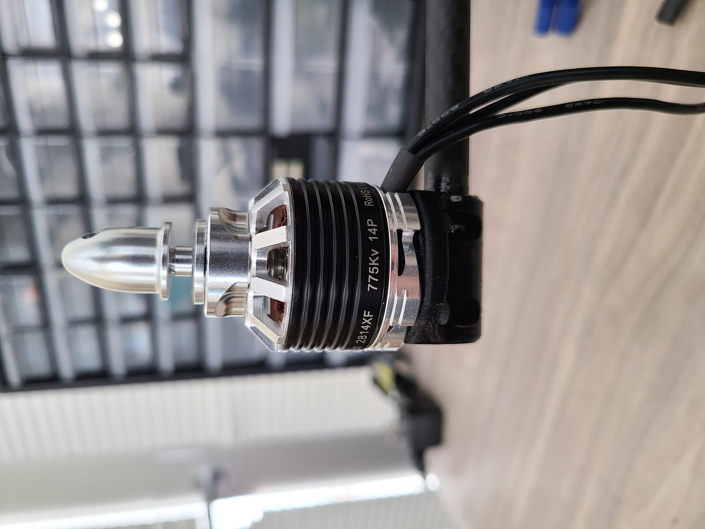

Project Overview
Commercial off-the-shelf (COTS) unmanned aerial vehicles (UAV) are undesirable for academic research due to the difficulty of modification and the inability to readily program missions from a companion computer. Furthermore, open-source designs are scarce and unreliable. To address this gap, we present ROARQuad - a Robust and Open source Academic Research Quadcopter. Our quadcopter costs around $1,500, provides over thirty minutes of flight time, and has a maximum payload of nearly 2 kilograms. To support research into swarm coordination and planning, we have experimentally derived the power consumption profile of the vehicle. Our quadcopter not only addresses the limitations of existing COTS and academic designs but also provides a flexible and reliable solution for future UAV research and development.
UAV Assembly
Let's build a drone!
Before we begin, please check out the Bill of Materials page to ensure you have all required components.
Creating the Carbon Fiber Arms
Before gluing, clear your work table. Use either a silicon mat or lay paper towels across your work table as you don't want to get JB weld everywhere. You also want a pair of gloves, a cup to mix the JB weld in and a stirring stick.
After that grab your carbon rods, arm mounts, motor mounts and molds. Below is a picture of all those components.

First wrap each of your carbon rods with painters tape in the middle leaving a section that can be used to pull the arm out of the mold once cured. Below shows rods taped:

Next you'll glue the arms together. Note: the JB weld only has 10 minutes of good working time so if you're doing this by yourself only do two arms at a time to give yourself plenty of time. Now open the JB weld, push out about two quarter size blobs into your container. Stir the two parts of the JB thoroughly; after mixing use your stir stick to coat the inside of the motor mount with JB. Then coat the inside & outside of the carbon rod. After both the mount and rod have a thin coating, slowly insert the rod while spinning it. Make sure there is always a thin ring of JB weld around the rod. If there isn't, you need more JB. Use a paper towel to remove any excess JB. Repeat the process for the arm mount. Note: the motor mount takes more glue than the arm mount. After both sides have been glued rotate the pieces so the tape aligns with the top of the motor & arm mount. Slowly insert the glued assembly into the mold. Push firmly to ensure the mounts lay flat within the mold. Repeat the process for the other 3 arms.

After waiting 24 hours for a full cure before removing the arms from the molds. To remove the arms use the tape to pull the arms out or insert two rods into the holes in the bottom of the mold while pressing against the mold to pop the arm out of the mold.
Heat Set Inserts
Before getting started, go over the following resources on how to use thermoplastic heat set inserts.
As shown in the video a jig for the iron helps create a better product. You can follow the instructions to make one from Adafruit.
Using a soldering iron melt the thermoplastic inserts into the arm mounts. If you aren't using the insert press ensure that the inserts are straight; a good way of checking is to use a screw to spot the normality of the bolt. The plastic will still be warm enough for fine adjustments. Once all the inserts have been added the arms are now complete and should look like the following:

Assemble Lower Frame
First mount the Orange Cube to the carbon fiber base plate with the provided screws. The arrow on the cube should face towards the two additional holes in the base plate. Next you'll also need the glued arms, the landing leg mounts and the M3 bolts. Below is an image of all those items:

Next is to mount the arms and leg mounts to the carbon fiber plate. Each corner requires 3 bolts, repeat.

Assemble Landing Legs
There are six carbon fiber rods used for the landing legs. There are 4 10mm rods that extrude 6" from the body, these are referred to as the 'legs'. There two 8mm rods, about 14", that connect the bottoms of the 'legs' together, these will be referred to as the 'feet'
Using the JB Weld, glue the 4 legs into the body of the drone. Alternatively, you can drill a small hole through the carbon fiber rod, using a screw and nut to hold the assembly together instead of glue. This is more difficult to manufacture, but easier to repair in the event of a crash.
Now we will attach the feet. Using the 3D printed joint, slide the joint first into the leg and then slide the leg through the joint. This is held in by friction.
Cutting Motor Leads & Mounting Motors
We will now mount the four motors to the ends of the arms.
If you have a soldering iron handy, you can shorten the wire leads that will be plugged into the ESC. This step is optional, as a zip tie can hold down the extra wire.
Then we will use the provided screws to attach the motors. Ensure that you screw into the proper hole that is the same diameter as the holes on the motor mount.
PCB & Electronics
Required Materials
PCB & Electronics
Required Materials
- 1 - Custom PCB Drone Frame
- 1 - 0.001 Ohm Current Sense Resistor (SMD)
- 1 - 0402 2 kOhm SMD Resistor
- 1 - 0402 8 kOhm SMD Resistor
- 1 - 0805 47 kOhm SMD Resistor
- 1 - IN9 Voltage to Current Amplifier (SMD)
- 1 - JST-GH Connector
- 4 - KDEDirect KDEXF-UAS35 ESC
- 1 - KDEDirect KDEXF-UBEC22 Battery Eliminator Circuit
- 1 - EC5 Male Battery Connector
- Solder Iron, Solder Paste, Solder Wire, Other Soldering Accessories as Needed
- Tweezers
The Board Before Beginning

Surface Mount Soldering
Begin with a clear workspace. Using solder paste with the narrowest needle available, apply the paste to the SMD pads. For larger pads, that’s all you need. For very small and closely spaced pads, continue:
- Use tweezers to spread solder evenly across the pads.
- Remove any excess paste to create a thin, even layer.
- To eliminate solder bridges, carefully scrape between pads with tweezers.

Solder paste on the board before devices are placed — it may not look pretty, but there should be no bridges.
Placing SMD Devices
Start placing the SMD devices. A Pick and Place machine helps, but is not required. Match device pads to board pads.
- The 8kΩ resistor should be closer to the largest current sense resistors.
- The 2kΩ resistor should be nearer the center of the board.

Once all devices are placed, use a reflow oven or heat gun to cure the solder.
Post-Solder Testing
- Use a multimeter to ensure no shorts between terminals of each resistor and capacitor.
- Inspect IC pins for solder bridges.
Only proceed once the board is verified to be correct.
Through-Hole Soldering
- Solder the four KDEDirect KDEXF-UAS35 ESCs to the board corners (wires should exit opposite the SMD side).
- Ensure the red wire connects to the positive terminal.
- Solder the KDEDirect KDEXF-UBEC22 Battery Eliminator Circuit to the left middle terminals.
- Insert the JST-GH Connector into the large terminals near the SMD area.

Photo: Through-hole soldering in progress with 1 ESC and battery connector in place.

Photo: Completed through-hole board with the battery eliminator circuit on the left.
Soldering Tips
- Use as little solder as possible during SMD placement — it’s easier to try again than to fix bridges.
- Increase iron heat for thicker wires (through-hole parts).
- Take your time — careful soldering takes patience.
Final Assembly
Required Materials
- Cube Orange
- 4 - Motors
- 4 - Completed Arm Assemblies
- Telemetry Radio
- Receiver
- Completed PCB with soldered ESCs
- Velcro
- Zip Ties
- Special Wire
- GPS Module
- Legs
GPS and Cube Mounting
Using the pre-existing holes in the carbon fiber base plate, use 4 M3 screws to mount the Cube Orange Assembly to the baseplate. Then use the provided screws to mount the GPS to the PDB.
Electrical Connections to be Made
- Each motor to its respective ESC
- Each ESC to its proper input port on the Cube Orange
- The Cube Orange to the power distribution board
- The battery eliminator circuit to the Cube Orange
- The RC Radio and Telem Radio to the Cube Orange
Physical Assembly
You can now connect the PDB to the rest of the drone. You will use 12 M3 screws to mount the PDB to the top of the arm assembly. Ensure to properly route all wires to avoid pinching.Conclusion
Now that you have a working drone continue to the First Flight page for information on getting it in the air.
Bill of Materials
| Name | Quantity | Total Price | Distributor |
|---|---|---|---|
| CubePilot Orange | 1 | $350 | Amazon |
| KDE2814XF-775 Motor | 4 | $380 | KDE |
| NEO 3 Pro GPS | 1 | $168 | RC-Wing |
| KDEXF-UAS35 ESC | 4 | $244 | KDE |
| KDEXF-UBEC22 Battery Eliminator | 1 | $62 | KDE |
| 10000 mAh HV LiPo | 1 | $150 | GensTattu |
| 12x4.5 Propeller Set of 2 | 2 | $20 | Master Airscrew |
| 10x8x420mm Carbon Fiber Tubes | 1 | $22 | Amazon |
| 8x6x350mm Carbon Fiber Tubes | 1 | $19 | Amazon |
| Raspberry Pi 4 | 1 | $45 | Canakit |
| Custom PCB | 1 | $10 | Custom |
| 0.001 Ohm Current Sense Resistor | 2 | $0.32 | Mouser |
| 2 kOhm Resistor | 1 | $0.10 | Mouser |
| 8 kOhm Resistor | 1 | $0.10 | Mouser |
| 47 kOhm Resistor | 1 | $0.10 | Mouser |
| JST-GH Connector | 1 | $0.10 | Digikey |
| IN9 Voltage to Current Amplifier | 1 | $0.10 | Mouser |
| Remote ID | 1 | $39 | GetFPV |
| Custom Base Plate | 1 | $10 | Custom |
| M3 Heat Set Inserts | 24 | $5 | McMaster Carr |
| M3 Screw Assortment Kit | 1 | $15 | Amazon |
| JB Weld Plastic | 1 | $7 | Amazon |